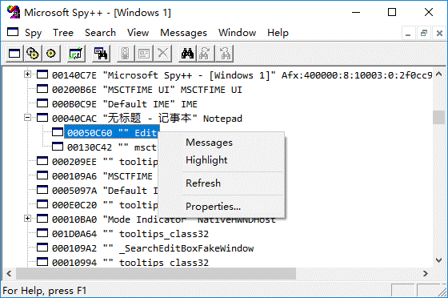

pywinauto 是一组 python 模块，可连接到指定 Windows 应用的进程，并通过向应用的窗口对话框和控件发送动作，来实现图形界面（GUI）的操作自动化。
在 pywinauto 出现之前，Python 社区中已存在若干 GUI 自动化工具，如 PyAutoGui、pyautoit、autopy 等。这些工具或基于图像识别或仅适用于较旧的 Win32 API，使用上的灵活性、准确度和效率上有一定的限制。相比之下，pywinauto 采用了面向对象的方式，并且只采用可读性较高的 Python 代码，不必另外再学习专用的脚本语言。
本文基于 Windows 10 x64 中文环境，内容涉及 pywinauto 的安装，同时也以记事本的自动化操作为例，揭示了 pywinauto 的基本功能和概念。
安装 pywinauto
为避免破坏系统级上的 Python 环境，我们将使用 pipenv 创建一个项目虚拟环境，并在这个项目环境中安装 pywinauto。打开 Windows 资源管理器，进入打算存放项目的位置（例如 D:\temp），在空白处右击并选择 “在此处打开 PowerShellp 窗口”，然后运行如下命令：
PS D:\temp> cmd |
提示：关于 Python 的虚拟环境和包管理，详见 pipenv，人性化的 Python 开发流程。
耐心等待，直至 pipenv 在 test_pywa 文件夹中创建项目虚拟环境，并安装好 pywinauto。接着，让我们来快速测试一下 pywinauto：
D:\temp\test_pywa>pipenv run python |
出错了！不过，我们也发现了，当运行倒数第二行代码（即 app = Application...）时，记事本打开了，这起码说明 pywinauto 的确已经起作用了。错误信息显示 pywinauto 无法在 dict_keys(['无标题 - 记事本 Dialog', 'Dialog', '无标题 - 记事本']) 中找到 UntitledNotepad，或许我们可以试着运行：
>> app['无标题 - 记事本'].type_keys("%FX") |
记事本退出了。代码中的 type_keys 表示按键，% 相当于 Alt，type_keys("%FX") 就是按下 “Alt+F,X”，从记事本菜单中可以看到，这个组合键对应于 “文件 | 退出”。这样，记事本退出也就不奇怪了。
提示：也可以通过窗口类名来查找并退出记事本，即
app.Notepad.type_keys("%FX")。
现在，我们已安装了 pywinauto 且一切正常，可以更深入地了解 pywinauto 的更多功能了。
利用 pywinauto 进行自动化
通过上面这个简单的例子，你可能已经感觉到了，pywinauto 的自动化操作与我们平常的手工操作并无不同，只不过是通过代码来实现操作而已。操作过程通常都是先进入到应用中，找到要操作的窗口、对话框和控件，然后使用鼠标和键盘执行所需的操作。
下面，我们将再一次 pywinauto 启动记事本，并在交互式 python 中一步步执行一些操作，并在这个过程中了解涉及到的 pywinauto 概念和技术细节。
入口点——连接到应用的进程
照例运行 python，导入 pywinauto.application 模块，并创建该模块中的 Application 类的一个实例：
pipenv run python |
在上面的代码中，pywinauto 在一个新的进程中启动了记事本，并用一个名为 app 的 Application 实例连接到这个记事本进程。这个 app 实例就是自动化的入口点，后续的操作均以这个 app 为基础。
对于跨进程的应用来说，例如 Windows 10 的 “计算器” 就在一个以上的进程中绘制其界面部件，则应采用 Desktop 对象作为入口点：
from subprocess import Popen |
GUI 对象检查
上面的代码使用了 backend 来为 Application 实例指定后端的访问技术。Windows 有两种访问技术：
- Win32 API（
backend="win32"）：默认的后端访问技术，适用于 MFC、VB6、简单的 WinForms 控件及大多数老旧的应用。 - MS UI Automation（
backend="uia"）：适用于 WinForms、WPF、应用商店、Qt5、浏览器等。
提示：pywinauto 不支持 Java AWT/Swing、GTK + 及 Tkinter 等。Linux 上的 AT SPI 及 Apple Accessibility API 未来有支持计划。
如果未能确认要采用的后端访问技术，可运行 Spy++ 或 Inspect.exe 并查看目标应用。若 Spy++ 能够显示应用的所有控件，则应采用 "win32" 后端，否则，在 Inspect.exe 中切换到 UIA 模式，若能够显示比 Spy++ 更多的控件和属性，则可选择 "uia"。
提示：适用于 Windows 的 GUI 检查工具，可从 这里 免费下载。
即使检查工具无法查看到应用的部分或全部控件，仍然可以利用基本的 mouse 和 keyboard 模块，通过生成鼠标和键盘事件来控制应用。
连接到目标应用的进程
创建 Application 实例后，必须将其连接到目标应用的进程。Application 提供了两个连接进程的实例方法：
start(self, cmd_line, timeout=app_start_timeout) |
start() 方法可启动目标应用，并连接到其进程，其中：cmd_line 是目标应用的路径及参数，如 r"c:\path\to\your\application --arguments"；timeout 参数可选，通常在应用启动时间非常长时使用。
connect() 方法则用于连接到已经启动的进程，可以向该方法传入应用的进程 ID（可在任务管理器中查看 PID）、应用的窗口句柄、可执行文件的路径，或者是各种窗口参数的任意组合。例如：
# 传入 PID |
注意：使用 connect() 方法时，通常需要编写一个循环来等待应用完全完成启动。
查找窗口、对话框和控件
连接到目标应用后，就可以透过这个 app 实例来访问记事本的窗口、对话框和控件了。首先运行以下语句，在记事本主窗口周围绘制绿色的轮廓线，以确认 app 实例连接到正确的应用：
app['无标题 - 记事本'].draw_outline() |
上面的代码采用了字典索引的方式找到了记事本的主窗口，并执行了绘制轮廓线的方法。除此之外，你还可以使用 app.window() 方法来查找窗口，下面的语句同样可在记事本主窗口周围绘制轮廓线：
app.window(title='无标题 - 记事本').draw_outline() |
提示：在英文操作系统上，你还可以采用魔法属性来查找窗口并绘制轮廓线，例如
app.UntitledNotepad.draw_outline()。不过，由于 Python 的属性不允许含有空格或其它特殊字符，因此在中文系统上无法采用这种方式，这也是本文最初的示例出错的原因。
为方便后续操作，让我们把记事本的主窗口保存到一个变量（例如 mainwin）中：
mainwin = app['无标题 - 记事本'] |
记事本主窗口是一个 WindowSpecification 对象，它是 pywinauto API 的一个核心概念。WindowSpecification 对象并非真正的窗口或控件，而是一组描述窗口或控件的条件。执行操作时，pywinauto 会根据这些条件寻找匹配的窗口或控件。例如，目前 mainwin 的匹配条件就是窗口或控件应含有 '无标题 - 记事本' 字样，在当前情况下对应于记事本的主窗口。若 pywinauto 无法找到与这些条件相匹配的窗口或控件，就会抛出 ElementNotFoundError。
pywinauto 在查找窗口或控件时采用了最佳匹配（best match）的方式，这意味着你不必在 WindowSpecification 中指定绝对精确的条件。例如 app['无题 - 记事本']、app['无题 - 记事'] 等等，都可以匹配目前情况下的记事本的主窗口。不过，为避免混淆，确定条件时还是应该尽量精确。
执行操作
掌握了查找窗口和控件的办法，就可以用代码来执行一些自动化操作了。运行如下语句：
mainwin.menu_select('帮助 -> 关于记事本') |
上面的代码从 mainwin 的 “帮助” 菜单中选择了 “关于记事本”，打开了“关于记事本” 对话框。接着，让我们使用代码关闭这个对话框：
app['关于记事本']['确定'].click() |
上面的代码中，首先通过 ['关于记事本'] 确定要操作的窗口，然后通过 ['确定'] 定位到 “确定” 按钮，最后调用 click()方法模拟鼠标单击这个按钮。
注意：若上面代码未能关闭 “关于记事本” 对话框，可再重复运行一次。测试中发现，同样用代码来打开和关闭 “编辑 | 替换” 对话框，则不存在这个问题。若频繁出现这种现象，甚至需要数量不定的多次单击 “确定” 按钮，或许可考虑使用一个循环来解决问题，如下：
while app['关于记事本'].visible |
查看控件标识符
现在，让我们在记事本主窗口的编辑框中输入一些内容，继续试验 pywinauto 的更多功能。第一步显然是定位到编辑框，但这个编辑框并没有标题，如何才能让 pywinauto 找到这个窗口呢？
一种办法是在 Spy++ 中找到并展开 “无标题 - 记事本”，右击其“Edit” 子项并选择 Highlight（如下图），可看到记事本的编辑窗口闪动数次，由此可确认 Edit 对应于记事本的编辑框。

另一种办法不需要依赖外部工具，调用 WindowSpecification 对象的 print_control_identifier() 方法，即可以树状列表的形式输出该对象所包含全部控件的标识符。例如查看记事本主窗口的所有控件：
mainwin.print_control_identifiers() |
可以看到主窗口包含编辑框和状态栏两个子窗口，同时也列出了访问这些子窗口的两种方式：字典索引和方法调用。其中的字典索引还列出了多个可选项，任选其一即可：
# 若采用不含非英文字符的字典索引，则可直接以属性的方式来访问，如下： |
上面的代码调用了编辑框的 type_keys() 方法，向编辑框中输入指定的内容，其中 with_spaces 为 True，表示保留输入内容中的空格。
现在，我们已经完成了重要信息的输入，可以保存文件并关闭记事本，然后关闭 python 了：
mainwin.menu_select（'文件 -> 保存') |
上面的代码使用了 “标题 + 类名” 的方式来访问控件，可以最大限度减少歧义并避免访问到错误的控件。当然，若因此而导致控件索引过长，也可以适当精简，pywinauto 的 “最佳匹配” 大多数情况下都能够正确处理。
此外，代码中使用了 set_text() 方法来直接设置 “文件名” 编辑框的内容。这里也完全可以采用 type_keys() 方法，但这个方法对于禁用的编辑框是无效的，与手动操作时无法在禁用的编辑框中输入是一致的。
最后，在退出记事本时，注意此时标题已经从 “无标题 - 记事本” 变成了“pywa.txt - 记事本”，要引用记事本的主窗口，必须采用 app['pywa.txt - 记事本'] 的形式。
提示：“另存为” 对话框远比比记事本主窗口复杂，其中包含有地址栏、侧边栏目录树等等，调用 print_control_identifiers() 方法将输出大量内容，在其中寻找所需的控件非常困难。在这种情况下，使用前述的 Spy++ 及其 Highlight 功能，可以更容易地确定所需控件。
在资源管理器中，双击打开 pywa.txt 查看其内容，并确认一切符合预期。
完整的自动化代码
说来话长，但实际上整个导入模块、启动记事本、输入内容、保存后退出的有效代码总共只有约 10 行，如下：
from pywinauto.application import Application |
将上述代码保存到 pywa.py 文件中，然后用 pipenv run python pywa.py 运行这个脚本。可以观察到记事本以极快的速度自动打开，输入内容后保存文件，最后退出。
其它自动化相关因素
GUI 构建通常需要执行大量的代码，并耗费一定的时间。也就是说，在执行 python 代码时，GUI 界面可能尚未完全生成并显示。pywinauto 有内置的默认超时，能够自动等待 GUI 的生成，而无须显式调用 sleep 或编写 while 循环。
如果有某些操作需要耗费大量时间，随后才能显示或关闭某个窗口，或者是激活某个控件，则可考虑使用 WindowSpecification 对象的 wait()或 wait_not()方法。例如，假设在执行长时间的数据转换完成，应用会弹出 “转换完成” 窗口，要等待该窗口出现并单击其 “确定” 按钮将其关闭，可：
app['转换完成'].wait('enabled') |
此外，多线程应用经常采用延迟初始化技术，在 GUI 已经可用的情况下，可能仍有部分内容尚未初始化完成。在这种情况下，可考虑采用 Application 的 wait_cpu_usage_lower() 方法。例如：
app.wait_cpu_usage_lower(threshold=5) # 等到 CPU 使用率低于 5% |
尾声
本文关于 pywinauto 的探讨到此为止，更多信息请参阅 官方文档。此外，pywinauto 的 GitHub 仓库 的 examples 目录中，也有大量示例可供参考。